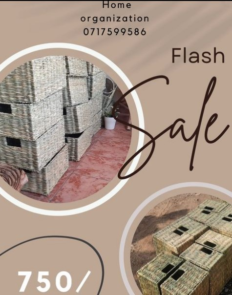
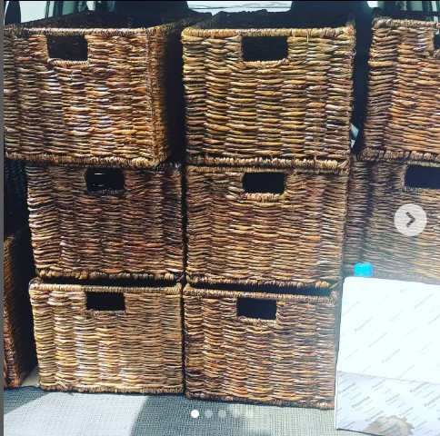
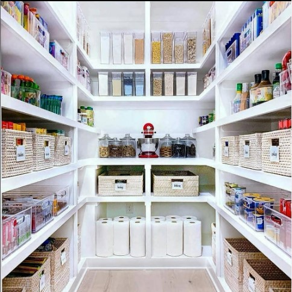

Welcome to The Wicker Shop
We offer a variety of baskets for all your needs. Whether you're looking for storage, decoration, or gifting, we have something for you.
Our baskets are not only stylish and unique, but they are also made with the traditional Kenyan weave, adding cultural significance and authenticity to the product. We are confident that our customers will appreciate the craftsmanship and attention to detail that goes into each and every basket.
Our Products
- Flash Sale 
- Woven baskets 
- Cabinet Basket 
About Us
We are a small family business that has been making baskets for generations. We pride ourselves on using high quality materials and traditional techniques to create beautiful and functional baskets.
Contact Us
Phone: 0713 - 931 910
Email: info@thewickershop.com
Address: 123, Nakuru, Kenya